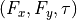

Superlubric interface detector
Compute the interlocking potential between a periodic substrate and a finite-size adsorbate, in the rigid approximation.
The adsorbate is treated as a rigid body at a given orientation  and center of mass (CM) position $x_\mathrm{cm}, y_mathrm{cm}$
and center of mass (CM) position $x_\mathrm{cm}, y_mathrm{cm}$
Substrate
The substrate is defined as a periodic function resulting from either a monocromaitc superposition of plane waves or a potential well of a given shape repeated in space.
The functions handling the substrate creation are in tool_create_substrate.py.
For a plane wave superposition, the substrate is defined by a suitable set of wave vectors, where the number of vectors defines the symmetry and length of vectors defines the spacing [1].
For a lattice of wells, the substrate is defined by the shape parameters of the well and the lattice vectors [2-5]. This substrate can be decorated with a lattice basis.
The parameters are specified in a JSON file. See Example/0-Substrate_types.ipynb for details.
Cluster
The cluster is defined as a collection of points (optionally decorate with a basis) belonging to a given lattice.
For convenience, there are functions returning clusters in regular shapses, e.g. rectangles, hexagons, circles, etc.
Using the Shapely package, clusters of arbitrary shapes (e.g. imaged in experiments) can be created.
The functions handling the substrate creation are in tool_create_substrate.py.
See example/1-Cluster_creation.ipynb for details.
Static Maps
See example/2-Cluster_on_substrate.ipynb for details on the following functions.
Translations
To explore the energy landscape of an adsorbate over a substrate as a function of the CM at fixed orientation, see static_trasl_map.py
Rotations
To explore the energy landscape of an adsorbate over a substrate as a function of the imposed rotation , at fixed CM, see static_roto_map.py
Roto-translations
To search for the global minimum of an adosrbate, one needs to combine rotations and translation, and locate the energy minimum in the $(x_mathrm{cm}, y_mathrm{cm}, theta)$ space. See static_rototrasl_map.py for details.
Dynamics Maps
To go beyond rigid maps, there are two essential tools: compute the minimum energy path between two minimum or perform a molecular dynamics calculation under given translational and rotational drives .
Barrier finding
The barrier between two points in the configurational space $(x_mathrm{cm}, y_mathrm{cm}) at fixed orientation can be estimated be the string algorithm [6], similar to the NEB methods. The ideal can be summarised like this: imagine the potential energy to be a hill landscape. Place a string between two points of the landscape and let it relax. The string would relax downhill until the gradient on the string vanishes, i.e. the string layes on the pass between the valleys and below the peaks.
See example/3-Barrier_from_stirng.ipynb
Molecular dynamics
The script MD_rigid_rototrasl.py solve the equation of motion for the center of mass and orientation of the cluster in the overdamped regime (no interial term).
See example/molecular_dynamics for an example of a system depinning under a constant force and torque.
Equations of motion
In the overdamped limit, the equation of motion are the following first order equations:
$$ gamma_{t} frac{dmathbf{r}}{dt} = (mathbf{F}_{ext} - nabla U) $$
$$ gamma_{r} frac{dtheta}{dt} = (tau_{ext} - frac{dU}{dtheta}) $$
The dissipation constants of the CM for a cluster of  particles are linked the “particle-like” damping constant
particles are linked the “particle-like” damping constant  by
by
 and
and
 , where
, where  is the position of the
is the position of the  -th particle with respect to the center of mass.
-th particle with respect to the center of mass.
In this picture energy is not conserved (fully dissipated in the Langevin bath between successive timesteps) and the value of the dissipation constant effectively sets how quickly the time flows.
Thus by lowering one can “speed up” the simulations and match timescales similar to experiments.
Units
The model can be ragarded as adimensional.
A coherent set of units useful to compare with experimental colloidal system is:
energy in zJ
length in

mass in fKg
From which follows:
force in fN
torque in fN

time in ms
translational damping constant
in fKg/ms
References
Vanossi, Andrea, Nicola Manini, and Erio Tosatti. “Static and Dynamic Friction in Sliding Colloidal Monolayers.” Proceedings of the National Academy of Sciences 109, no. 41 (October 9, 2012): 16429–33. https://doi.org/10.1073/pnas.1213930109.
Panizon, Emanuele, Andrea Silva, Xin Cao, Jin Wang, Clemens Bechinger, Andrea Vanossi, Erio Tosatti, and Nicola Manini. “Frictionless Nanohighways on Crystalline Surfaces.” Nanoscale 15, no. 3 (2023): 1299–1316. https://doi.org/10.1039/D2NR04532J.
Cao, Xin, Andrea Silva, Emanuele Panizon, Andrea Vanossi, Nicola Manini, Erio Tosatti, and Clemens Bechinger. “Moiré-Pattern Evolution Couples Rotational and Translational Friction at Crystalline Interfaces.” Physical Review X 12, no. 2 (June 15, 2022): 021059. https://doi.org/10.1103/PhysRevX.12.021059.
Cao, Xin, Emanuele Panizon, Andrea Vanossi, Nicola Manini, and Clemens Bechinger. “Orientational and Directional Locking of Colloidal Clusters Driven across Periodic Surfaces.” Nature Physics 15, no. 8 (August 2019): 776–80. https://doi.org/10.1038/s41567-019-0515-7.
Cao, Xin, Emanuele Panizon, Andrea Vanossi, Nicola Manini, Erio Tosatti, and Clemens Bechinger. “Pervasive Orientational and Directional Locking at Geometrically Heterogeneous Sliding Interfaces.” Physical Review E 103, no. 1 (January 13, 2021): 012606. https://doi.org/10.1103/PhysRevE.103.012606.
E, Weinan, Weiqing Ren, and Eric Vanden-Eijnden. “Simplified and Improved String Method for Computing the Minimum Energy Paths in Barrier-Crossing Events.” The Journal of Chemical Physics 126, no. 16 (April 28, 2007): 164103. https://doi.org/10.1063/1.2720838.